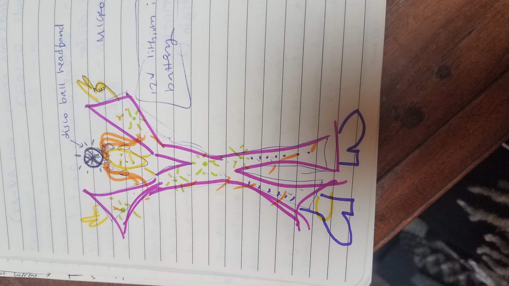

Lily's Final Project!
Here is all the documentation for my project!
First, I have my brainstorms I did to come up with an idea... I wanted to make something to boogie in!

For my final project I am thinking I will make a disco suit.
So far, my ideas for this project include:
- Using an accelerometer on each of my limbs to register the intensity of my boogie-ing
- Depending on the speed of my dancing, LEDs in the suit would either:
---> Change Color
---> Change intensity
---> Both
---> Blink
Building the project!!
Operation of Circuit
Here I am dancing around in my pants! The first bit of the gif shows the blinking feature of my pants. Then they go back to just turning on and off when I raise and lower my arm, respectively (the tilt ball switch detects whether my arm is up, and turns the LED strip on if it is).The RGB led on my neck turns pink or teal depending on which direction I am moving side to side (this is read by the accelerometer). It is hard to see in this GIF, but it is happening!

Schematic!
Here is the schematic for my disco pants!

The RGB LED was connected through my code to the accelerometer. The RGB LED was connected to the pwm pins 3, 5, and 6.
I soldered the accelerometer to be able to use it in this project. I connected Vin to 5V on the arduino; the SCL pin to Digital #13 pin; the SDA pin to Digital #11 pin; the SDO pin to Digital #12 pin; the CS pin to Digital #10 pin.
Here is a close-up on the schematic for the accelerometer.
The LED strip was powered by 12V from the wall, and connected to pin 9 and ground through the N-channel MOSFET transistor. It was controlled through code by the tilt ball switch.
The tilt ball switch was connected to pin 4 and ground.
Circuit
To put my project together, I migrated from the large breadboard to the tiny breadboard. This fit perfectly on the Arduino cover, which I used to increase the stability of my project. I tried to solder everything together at first, but the iron was taking such a long time to heat everything (ie ~5 minutes per connection) that it was too fickle to make my prototype with. I made one mistake and was then unable to remove the solder , so I figured I would just solder the connections between wires, but not solder everything to the breakout board.
Here are images of my circuit.
Technical Write Up
Concept:
My concept was to make a suit that would light up depending on how I danced. My aspirations were pretty big - I wanted to make a suit that would fit right in if Saturday Night Fever came back in 2020. I love disco and dancing, and more than those I love being goofy. Making this project was so much fun because I got to explore my creative side and make something that is not very practical but fulfills a purpose that makes me happy.Implementation:
- I had big aspirations for the fidelity of this project. I was hoping to make a real bell-bottomed suit, and sew in rainbow LEDs. However, the more I thought about it, the less I wanted to spend $50 on a suit that I likely would not be able to wear out. So… I used an old pair of pants that were close to being in the goodwill pile - and just made the bottom half. The ‘disco suit’ became a pair of ‘disco pants’ and a necklace of sorts.
- I started by making just the tilt ball switch work with the LED strip. Once I could do that, I wanted to give it more functionality that just ‘ON’ and ‘OFF.’ So, I made a counter that would see how many times the switch had been turned; every 5 times, the pants blink instead of turn the LED on continuously.
- Next, I needed to make the accelerometer work… I ran into trouble here because I followed the image on the Adafruit tutorial, not the written instructions - the image had the wiring wrong!
- Once Jasper helped me fix the wiring, I learned how to read the data and decided to just use the x-axis acceleration to control the RGB led. It changed depending on whether I moved left (turned pink) or right (turned teal).
- Next, I soldered the tilt ball switch and the RGB LED legs to long wires, and the long wires to halves of wires with ends I could put into the Arduino. I also soldered wires to the LED strip -- however, one of those connections broke while I was home testing my project. I did not have time to go back to Sieg and re-solder, so I just used alligator clips instead.
- I tried to solder wires directly to the breakout board, but the soldering iron was not being my friend, and it was taking an excessive amount of time to do just one connection. So, I decided I would just attach the tiny breadboard to the breakout board, and condense the circuit into that small space without soldering.
- Not having my project soldered was frustrating during testing - wires kept popping out! But I eventually got it sorted out, and was able to dance around my room with blinking pants for a while.
- The RGB LED was on long wires that I just wrapped around my neck like a necklace in the end - I mostly had been trying to just get the functionality to work… that’s where I would start if I improve this project.
If I had more time to do this project, I would...
- Map the x, y, and z values from the accelerometer to 0 to 255 so that I can use them all to control the RGB led’s color at once. I would like a more interesting fuctionality to this part of the project. I would also make a more interesting and secure enclosure for it -- maybe it could be put into a translucent disco ball on a headband!
- Get a rainbow led strip, sew it into a really cool pair of disco pants, and make it change color based on input from the surroundings - maybe find a sensor that could read bass vibrations from the music, and match my suit to the music in the room I am dancing in.
- Solder everything and make an enclosure.
My code
Here is my code. Much of the code for the accelerometer is taken from the Adafruit example in Arduino.
// Much of the code for the accelerometer is from the Adafruit LIS3DH accelerometer example
// initializes the tilt ball reading pin
const int tiltSensorPin = 4;
// initialize j, the value I will use to count how many times the tilt ball switch
// has been turned on and off
int j;
// initializes the value that holds the last tilt state
int state;
// initializes the value that holds the reading of the tilt ball switch
int tiltValue;
// initializes the tilt state as HIGH
int lastTiltState = HIGH; // the previous reading from the tilt sensor
// saves the transistor pin to #9
const int transPin = 9;
// the following lines of code are from Adafruit. They explain that I need to save the
// time as longs so that as the time increases it can still be stored, even though
// it will quickly become too big to be stored as an int variable
// the following variables are long's because the time, measured in miliseconds,
// will quickly become a bigger number than can be stored in an int.
long lastDebounceTime = 0; // the last time the output pin was toggled
long debounceDelay = 50; // the debounce time; increase if the output flickers
// this library helps me communicate from arduino to acccelerometer
#include
// this library enables me to communicate with SPI devices (like the accelerometer)
#include
// this library from Adafruit enables me to use the accelerometer + use things like the emaple code!
#include
// another Adafruit library, supports the Adafruit unified sensor abstraction layer (from Adafruit)
#include
// Used for software SPI
// saving the pin names of the acclereometer to their arduino pins
#define LIS3DH_CLK 13
#define LIS3DH_MISO 12
#define LIS3DH_MOSI 11
// Used for hardware & software SPI
#define LIS3DH_CS 10
//from the Adafruit example
// software SPI
// initializes lis as the reading of the pins of the accelerometer
Adafruit_LIS3DH lis = Adafruit_LIS3DH(LIS3DH_CS, LIS3DH_MOSI, LIS3DH_MISO, LIS3DH_CLK);
// hardware SPI
//Adafruit_LIS3DH lis = Adafruit_LIS3DH(LIS3DH_CS);
// I2C
//Adafruit_LIS3DH lis = Adafruit_LIS3DH();
// saving the pin for the red part of the RGB LED
const int RED = 6;
// saving the pin for the green part of the RGB LED
const int GREEN = 5;
// saving the pin for the blue part of the RGB LED
const int BLUE = 3;
// the following three lines are initializing the three readings from the adruino as 0
int z = 0;
int x = 0;
int y = 0;
void setup() {
// put your setup code here, to run once:
// saves tilt switch pin as input
pinMode(tiltSensorPin, INPUT);
//
digitalWrite(tiltSensorPin, HIGH);
// saves led strip pin as output
// Initialize serial communications
// This is so I can later see the values in the serial monitor
Serial.begin(9600);
// transistor pin is set as output
pinMode(transPin, OUTPUT);
// will pause Zero, Leonardo, etc until serial console opens
while (!Serial) delay(10);
// prints a test statement in serial
Serial.println("LIS3DH test!");
// checks if the transmission rate is not correct for the lis data
if (! lis.begin(0x18)) {
// error message
Serial.println("Couldnt start");
// creates loop within setup so it continues until the rate is correct
while (1) yield();
}
// if the transmission rate is correct, confirmation message to serial
Serial.println("LIS3DH found!");
// read range back from sensor (I used 4G)
lis.setRange(LIS3DH_RANGE_4_G); // 2, 4, 8 or 16 G!
//prints range in serial monitor
Serial.print("Range = "); Serial.print(2 << lis.getRange());
Serial.println("G");
}
void loop() {
// put your main code here, to run repeatedly:
lis.read(); // get X Y and Z data at once
// Then print out the raw data in serial
Serial.print("X: "); Serial.print(lis.x);
Serial.print(" \tY: "); Serial.print(lis.y);
Serial.print(" \tZ: "); Serial.print(lis.z);
// get new sensor event
sensors_event_t event;
lis.getEvent(&event);
// from the example code
// Display the results (acceleration is measured in m/s^2)
Serial.print("\t\tX: "); Serial.print(event.acceleration.x);
Serial.print(" \tY: "); Serial.print(event.acceleration.y);
Serial.print(" \tZ: "); Serial.print(event.acceleration.z);
Serial.println(" m/s^2 ");
// saving the acceleration in each direction as a variable
x = event.acceleration.x;
y = event.acceleration.y;
z = event.acceleration.z;
// new line in serial
Serial.println();
// delay 2/10 of a second
delay(200);
// check if x acceleration is positive or negative, ie whether
// if you are moving right
if (x > 0) {
// makes RGB LED glow pink-ish
digitalWrite(GREEN, LOW);
analogWrite(RED, 80);
analogWrite(BLUE, 20);
// if you are moving left
} else if (x < 0) {
// makes RGB LED glow teal
analogWrite(GREEN, 50);
digitalWrite(RED, LOW);
analogWrite(BLUE, 10);
}
// reads whether or not the tilt ball switch is tilted
tiltValue = digitalRead(tiltSensorPin);
// Checks if the switch has not changed:
if (tiltValue == lastTiltState) {
// reset the debouncing timer
// debouncing for error prevention
lastDebounceTime = millis();
}
// if the reading has been the same for a while (longer than the debounce delay)
if ((millis() - lastDebounceTime) > debounceDelay) {
// whatever the reading is at, it's been there for longer
// than the debounce delay, so take it as the actual current state:
lastTiltState = tiltValue;
}
// write the state to the LED strip to turn it on or off
digitalWrite(transPin, lastTiltState);
// if the last tilt state is 0
if (lastTiltState == 0){
// then turn off the LED strip
analogWrite(transPin, 0);
} else {
// if the tilt ball switch is on its first through fifth tilts
if (j < 5){
//Serial.println(j);
// turn the LED strip on and keep it on until the switch is turned off
analogWrite(transPin, 255);
} else {
//if the switch is on its sixth tilt turn it on and off repeatedly
// with a longer break every 2 blinks of the LED
//Serial.println(j);
analogWrite(transPin, 0);
delay(100);
analogWrite(transPin, 255);
delay(100);
analogWrite(transPin, 0);
delay(100);
analogWrite(transPin, 255);
delay(100);
}
// if the switch has been turned
if (state != lastTiltState){
// increase j by one
j++;
}
// if j is greater than 5
if (j > 5){
// set j back to 0
j = 0;
}
}
// print the tilt state to seial
Serial.println(lastTiltState);
// delay half a second
delay(500);
// save the last tilt state as the state
// so I can check if it has changed in the next loop
state = lastTiltState;
}